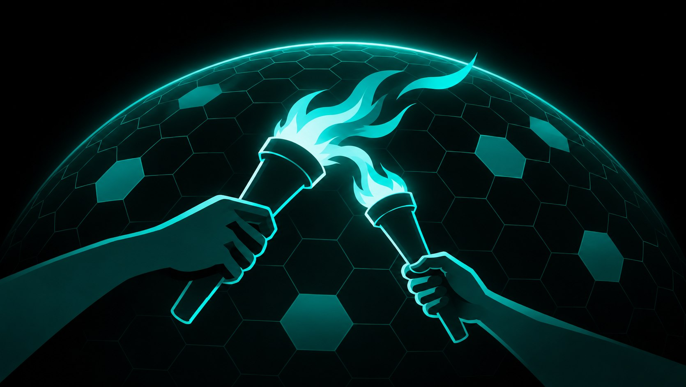

NIN Spot
Leave It Here. Let Others Discover.
Place objects anywhere in the real world for others to discover and experience.
Free to explore. Free to create.
Not sure where to start? Check out the NIN Spot Guide ↗.
Open NIN Spot ↗SMART GLASSES
Smartphones brought the internet into our hands. Smart glasses bring it into the world around us.
THE WORLD BECOMES THE INTERFACE.
The Spatial Internet
The internet has lived inside screens for decades. NIN.Earth brings digital content and services into the real world.
Not another world. The world we live in.
BEYOND SCREENS. INTO THE WORLD.
Domain Space
NIN.Earth divides the 1:1 scale digital Earth into hexagonal tiles. NIN Title represents ownership of these tiles, establishing Domain Spaces that owners can manage and operate.
THE INTERNET HAS A PLACE.
Digital Sovereignty
NIN.Earth respects individual sovereignty through digital ownership and privacy. Users own their Domain Spaces and control what they create, without surrendering their personal information.
NO *PII COLLECTED.
*Personally Identifiable Information

Get Started

Place objects anywhere in the real world for others to discover and experience.
Free to explore. Free to create.
Not sure where to start? Check out the NIN Spot Guide ↗.
Open NIN Spot ↗
Explore objects created for the real world.
For Everyone
Find objects you love and place them anywhere with NIN Spot.
For Creators
Create objects yourself or with AI. With NIN Title, upload your own GLB files to NIN Store and list them for others to discover or trade.
Open NIN Store ↗
Explore XR spaces created by others, right where you stand.
Bring entire spaces into your surroundings, wherever you are.
Open NIN Cast ↗Build and manage your own space on a 1:1 scale digital Earth.
Own your Domain Space with NIN Title, customize it with objects, and create new experiences and services.
Open NIN.Earth ↗